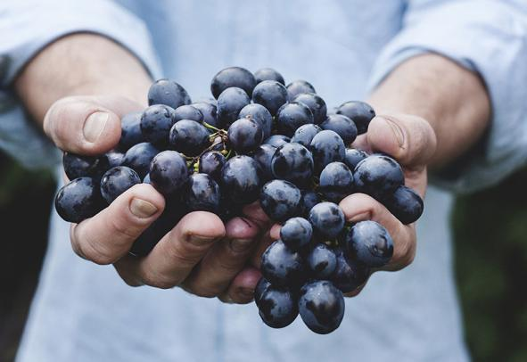

Contando a nossa história...

A Vita Naturalle é uma empresa brasileira que oferece produtos naturais e orgânicos para a saúde e bem-estar.
Fundada em 2022,
nossa missão é oferecer aos consumidores brasileiros produtos 100% naturais para melhorar sua qualidade de vida.
Nosso portfólio conta com uma grande variedade de produtos, como suplementos alimentares, fitoterápicos,
alimentos naturais, cosméticos naturais, óleos essenciais, ervas medicinais, alimentos orgânicos e suplementos nutricionais.
Estamos comprometidos com a qualidade dos produtos que oferecemos, de modo que todos os nossos produtos são
fabricados com ingredientes naturais selecionados e de alta qualidade.
Quem somos
Vita Naturalle é um e-commerce fictício para o Projeto Integrador criado e desenvolvido por
alunos do Grupo 2/Turma 2 do Programa Portal Tech 2022, realizado pela Proz Educação em parceria
com a Meta e a AWS.
Nossa empresa tem como objetivo contribuir na melhoria do estilo de vida das pessoas,
para que tenham uma alimentação equilibrada e de qualidade, contribuindo para uma vida saudável.
Incentivando uma vida saudável e buscando o bem estar das pessoas, também garantimos um
desenvolvimento econômico sustentável e um menor impacto ambiental para o planeta.
Estilos de Alimentação
Low Carb
Os carboidratos são nutrientes importantes para o fornecimento de energia para o corpo,
mas o seu consumo excessivo pode levar ao ganho de peso e ao surgimento de diversas doenças.
A dieta low carb vem com o propósito de reduzir a quantidade de carboidratos ingeridos, e
assim, melhorar a saúde.
Alimentação Orgânica
Alimentos orgânicos são aqueles produzidos sem uso de agrotóxicos sintéticos,
transgênicos ou fertilizantes químicos. As técnicas do processo de produção respeitam o
meio ambiente, a saúde do trabalhador agrícola, a do consumidor e têm como objetivo manter
a qualidade do alimento.
Alimentação Vegetariana
Pessoas vegetarianas são aquelas que excluem qualquer tipo de carne da própria alimentação,
sejam bovinos, sejam aves, porcos, peixes ou frutos do mar. Contudo, existem diferentes
vertentes dentro do vegetarianismo:Ovolactovegetarianos: são vegetarianos que retiram as carnes da rotina alimentar, porém consomem laticínios e produtos com ovos.
Lactovegetarianos: são aqueles que excluem carne e ovos da dieta, mas continuam consumindo laticínios, como iogurte, queijo, leite, manteiga, etc.
Ovovegetarianos: aqui, encontram-se vegetarianos que excluíram todos os produtos de origem animal da dieta, mas ainda consomem ovos.
Alimentação Vegana
Podemos considerar o veganismo uma forma mais intensiva do vegetarianismo.Enquanto os vegetarianos só se restringem na alimentação, os veganos evitam contato com qualquer produto que tenha origem animal. Portanto, além das carnes, os veganos não consomem outros alimentos vindos de animais, como mel, leite e ovos da alimentação. Eles também não usam produtos que envolvam algum tipo de sofrimento ou exploração animal. Por exemplo, se algum produto de beleza, higiene, vestuário e até medicamento tiver ligação com animais, eles não o utilizam. Por isso, muitos consideram o veganismo um estilo de vida, já que busca excluir todas as formas de exploração e crueldade animal na vida.
Alimentação sem glúten
A dieta sem glúten é necessária principalmente para quem tem intolerância ao glúten
e não consegue digerir essa proteína, ficando com diarreia, dor e inchaço abdominal
quando come essa proteína, como é o caso de quem tem doença Celíaca ou
sensibilidade ao glúten. A dieta sem glúten, algumas vezes, é utilizada para emagrecer
porque são eliminados da alimentação vários alimentos, como pão, bolachas ou
bolos, por exemplo, por possuírem glúten e assim diminui o valor calórico ingerido,
facilitando a perda de peso numa dieta de emagrecimento. Mas no caso de um doente
celíaco a eliminação do glúten envolve a leitura detalhada de todos os rótulos de
alimentos e até componentes de remédios ou batons.Porque a ingestão, mesmo que pequena de vestígios de glúten nesses produtos pode desencadear um processo inflamatório grave.